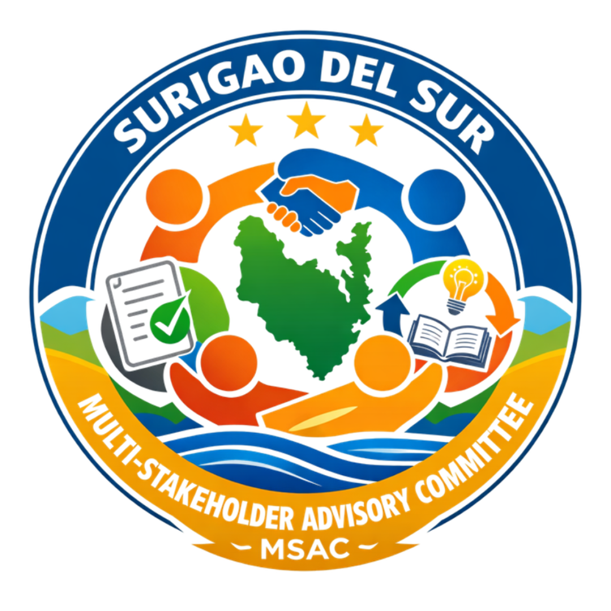
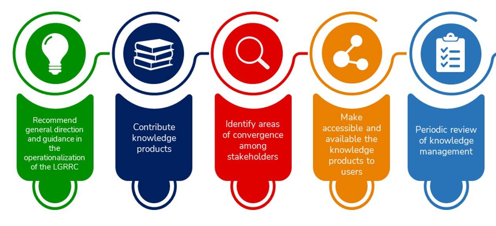
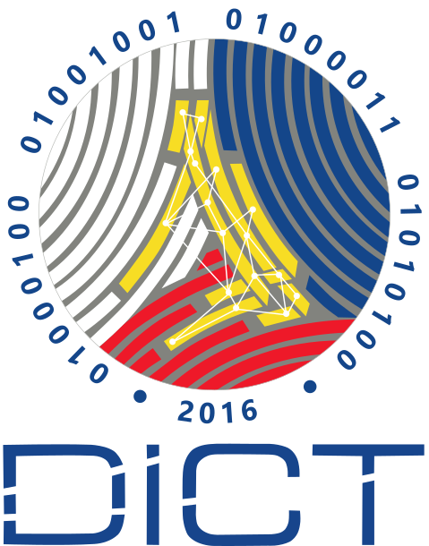
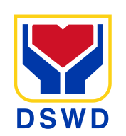
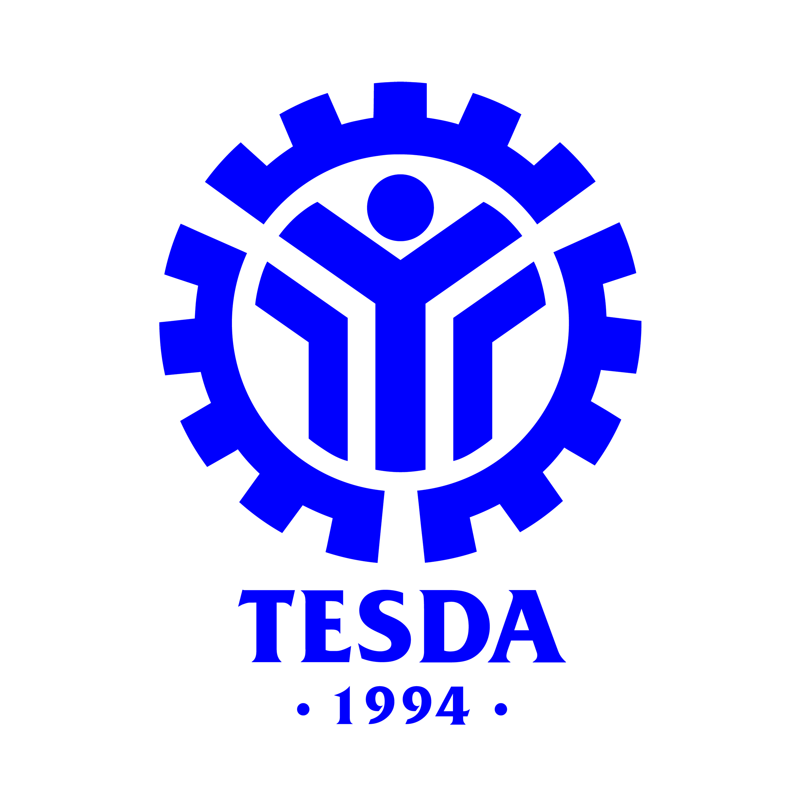

The Multi-Stakeholder Advisory Committee (MSAC) of Surigao del Sur convened its first semestral meeting for Calendar Year 2026 on May 26, 2026, at the SCI Building, Capitol Hills, Tandag City. The meeting, chaired by the DILG Surigao del Sur, was actively participated in by heads of offices and representatives from various national government agencies, including the DICT, DAR, DA, DSWD, DOH, DTI, LTO–Tandag, DepEd, DOJ–Prosecutor’s Office, TESDA, DOLE, NCIP, and Balay Mindanaw as the civil society organization partner. The Provincial Government, through the Surigao del Sur Academy for Barangay Good Governance, represented by the Provincial Administrator, Mr. John Vincent Pimentel, likewise participated in the activity. A key highlight of the meeting was the presentation of current programs and proposed innovations by MSAC members, showcasing collaborative initiatives aimed at strengthening local governance and service delivery. The committee also adopted the expanded membership of the MSAC, which now includes the PIA, Radyo Pilipinas, PSA, and PNP. To recall, the MSAC continues to serve as a vital convergence mechanism that harmonizes the efforts of various stakeholders toward responsive governance—fostering a more connected, empowered, and sustainable Surigao del Sur.

With the ultimate goal of creating and institutionalizing a knowledge center that is diverse, convenient, with free access to all available information on local governance, the DILG Surigao del Sur and its LGRC "Tambuli" officially inked its collaborative partnership with the Surigao del Sur Multi-Stakeholders Advisory Committee (MSAC).
The MOPA signing ignited the engine for a more significant partnership between the DILG Surigao del Sur LGRC and the MSAC to help initiate steps towards building organizations as Knowledge Centric Organizations (KCO) to promote the culture of knowledge sharing and learning; contribute to LGRRC Surigao del Sur's relevant local governance knowledge products, good practices, and its replication; improve socioeconomic conditions via means of knowledge sharing; and effectively transform each organization into becoming more productive and transformative development partners.
As the TAMBULI positions itself as a learning hub by institutionalizing knowledge management and encouraging a culture of learning, sharing, and replication of best practices in local governance for its clientele with the aim of customizing knowledge products and services to the needs and demands of clients, the official collaboration between the DILG and its MSAC shall achieve the end goal of fostering communities that are safe and secure, business-friendly and competitive, environment-friendly and climate change-adaptive, and transparent and responsible local governments.
ROLES OF MSAC

MSAC Members
.png) Surigao del Sur Academy for Barangay Good Governance
Surigao del Sur Academy for Barangay Good Governance
Department of Information and Communications Technology (DICT) - Surigao del Sur
Department of Social Welfare and Development (DSWD) - Surigao del Sur.svg) Department of Justice (DOJ) - Surigao del Sur
Department of Justice (DOJ) - Surigao del Sur
Technical Education and Skills Development Authority (TESDA) - Surigao del Sur.png) Organization for Human Development Inc. - Surigao del Sur
Organization for Human Development Inc. - Surigao del Sur.jpg) Police Provincial Office - Surigao del Sur
Police Provincial Office - Surigao del SurMSAC News
Be a part of the Surigao del Sur Multi-Stakeholders Committee!
Send a letter of intent to our e-mail address : dilg13sds@gmail.com
or visit us at the Capitol Hills, Barangay Telaje, Tandag, Philippines, 8300